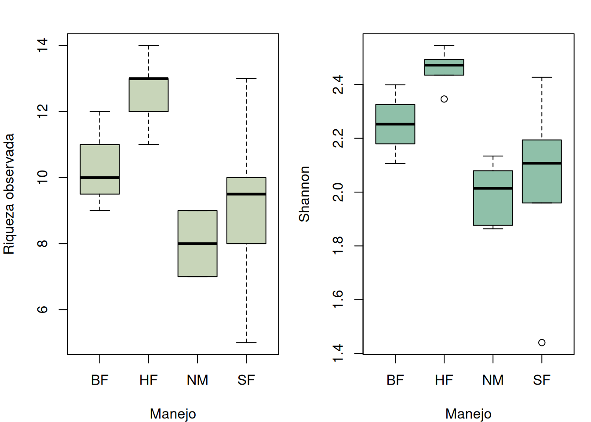
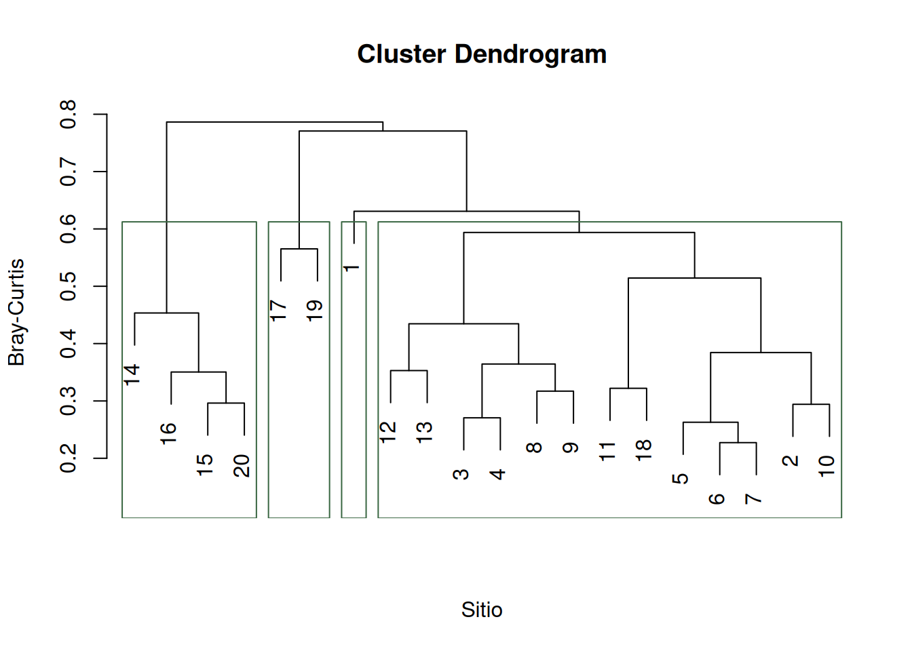
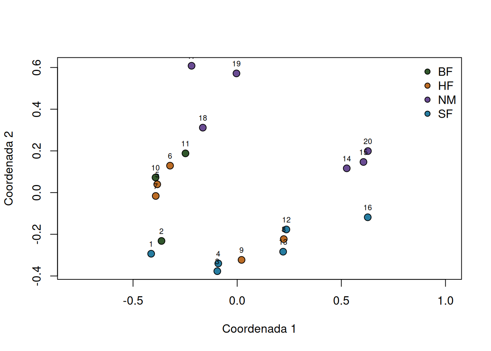

if (!requireNamespace("vegan", quietly = TRUE)) {
stop("Este capítulo requiere el paquete 'vegan'.")
}
data("dune", package = "vegan")
data("dune.env", package = "vegan")
comm <- as.matrix(dune)
env <- dune.env
site_id <- rownames(comm)
audit <- c(
sites = nrow(comm),
taxa = ncol(comm),
duplicated_sites = sum(duplicated(site_id)),
missing_abundances = sum(is.na(comm)),
negative_abundances = sum(comm < 0, na.rm = TRUE),
empty_sites = sum(rowSums(comm, na.rm = TRUE) == 0),
metadata_mismatch = as.integer(nrow(comm) != nrow(env))
)
audit
#> sites taxa duplicated_sites missing_abundances
#> 20 30 0 0
#> negative_abundances empty_sites metadata_mismatch
#> 0 0 0
stopifnot(audit[c("duplicated_sites", "missing_abundances",
"negative_abundances", "empty_sites",
"metadata_mismatch")] == 0)11 Riqueza, diversidad y composición de comunidades
Índices clásicos, semejanza, clasificación y ordenación
Una muestra comunitaria no es una lista completa de especies. Es el resultado de una unidad espacial, un periodo, un método, un esfuerzo y una capacidad de detección. Por eso, riqueza, diversidad y composición solo son comparables cuando esas condiciones tienen significado semejante. El tratamiento metodológico de este capítulo sigue los índices y métodos multivariados clásicos presentados por Henderson y Southwood (2016).
11.1 De la pregunta a la matriz comunitaria
Una pregunta comunitaria debe precisar población, unidad, periodo y atributo. Por ejemplo: ¿cómo varían la riqueza, la diversidad y la composición vegetal entre los 20 sitios de pastizal observados bajo distintas formas de manejo? La matriz analítica es
\[ \mathbf{Y}=[y_{ij}], \]
donde cada fila \(i\) es una unidad de muestreo, cada columna \(j\) una especie y \(y_{ij}\) su abundancia, cobertura o presencia. No deben mezclarse conteos, coberturas y biomasa en una misma matriz. Los metadatos de sitio se conservan en otra tabla enlazada mediante una clave única.
La población objetivo puede ser mucho mayor que las filas disponibles. Si se desconocen el marco y las probabilidades de inclusión, los resultados describen los sitios observados y generan hipótesis, pero no constituyen una estimación de diseño para todo el paisaje (Lohr 2022).
ImportanteCeros y faltantes
Un cero indica que el protocolo se aplicó y la especie no fue registrada. Un faltante indica que la observación no está disponible. Convertir un faltante en cero inventa una ausencia y modifica riqueza, índices y distancias.
11.2 Riqueza y diversidad clásica
Para una unidad con abundancias \(n_j\), total \(N=\sum_j n_j\) y proporciones \(p_j=n_j/N\), la riqueza observada es
\[ S_{obs}=\sum_j I(n_j>0). \]
\(S_{obs}\) cuenta especies registradas, no especies verdaderamente presentes. Su valor suele aumentar con área, duración, número de individuos y eficacia del método.
El índice de Shannon es
\[ H'=-\sum_{j:p_j>0}p_j\log(p_j). \]
Crece cuando aumentan riqueza y equidad. La base del logaritmo debe declararse; aquí se usa el logaritmo natural. La concentración de Simpson es
\[ D=\sum_j p_j^2, \]
la probabilidad de que dos individuos tomados de la distribución pertenezcan a la misma especie. En este capítulo se informa \(1-D\), que aumenta con la diversidad. No se deben intercambiar \(D\), \(1-D\) y \(1/D\) bajo un mismo nombre.
La equidad de Pielou relaciona Shannon con su máximo para la riqueza observada:
\[ J'=\frac{H'}{\log(S_{obs})}. \]
Está definida para \(S_{obs}>1\). Una comunidad con muchas especies puede tener equidad baja si una de ellas domina.
11.3 Semejanza y disimilitud
Para dos sitios, sean \(a\) las especies compartidas y \(b,c\) las exclusivas. La disimilitud de Jaccard en presencia-ausencia es
\[ d_J=\frac{b+c}{a+b+c}. \]
Jaccard ignora las abundancias y los dobles ceros. Es apropiada cuando la pregunta se refiere a identidad de especies.
La disimilitud de Bray-Curtis conserva abundancias:
\[ d_{BC}(i,k)= \frac{\sum_j|y_{ij}-y_{kj}|}{\sum_j(y_{ij}+y_{kj})}. \]
También ignora dobles ceros, pero responde tanto al reemplazo de especies como a diferencias en abundancia. Un sitio sin registros no tiene una comparación Bray-Curtis interpretable. La métrica se elige antes de examinar cuál produce la separación visual más atractiva.
11.4 Clasificación y ordenación
La clasificación jerárquica agrupa sitios a partir de una matriz de disimilitud. El resultado depende de la distancia, la transformación y el método de enlace. El enlace promedio combina grupos mediante su disimilitud media y produce un dendrograma descriptivo. Cortar el árbol en cierto número de grupos no demuestra que existan comunidades discretas.
La ordenación representa sitios en pocas dimensiones. Aquí se usa análisis de coordenadas principales sobre Bray-Curtis. Los ejes aproximan la configuración de distancias; su signo es arbitrario y no son gradientes ambientales demostrados. Los autovalores negativos advierten que la distancia no es completamente euclidiana. La clasificación y la ordenación son vistas complementarias de la misma estructura, no pruebas independientes.
11.5 Aplicación con vegan::dune
11.5.1 Procedencia, pregunta y auditoría
vegan::dune contiene abundancias de 30 especies vegetales en 20 sitios de pastizales de dunas, y dune.env aporta variables ambientales y de manejo (Oksanen et al. 2024). Se describirá la diversidad local y se explorará si sitios con formas de manejo semejantes también son semejantes en composición. El caso es observacional y la documentación del objeto no proporciona un marco probabilístico completo; por ello no se atribuyen efectos causales ni se generaliza a todos los pastizales.
La coincidencia por orden se comprueba en este objeto distribuido por el paquete. En un proyecto propio se usaría una columna identificadora en ambas tablas; unir por posición sin verificar claves es un error silencioso.
11.5.2 Riqueza, Shannon, Simpson y equidad
richness <- vegan::specnumber(comm)
shannon <- vegan::diversity(comm, index = "shannon")
simpson_1_D <- vegan::diversity(comm, index = "simpson")
evenness <- ifelse(richness > 1, shannon / log(richness), NA_real_)
site_metrics <- data.frame(
site = site_id,
Management = env$Management,
total_abundance = rowSums(comm),
richness = richness,
shannon = shannon,
simpson_1_D = simpson_1_D,
evenness = evenness
)
site_metrics
#> site Management total_abundance richness shannon simpson_1_D evenness
#> 1 1 SF 18 5 1.440482 0.7345679 0.8950216
#> 2 2 BF 42 10 2.252516 0.8900227 0.9782554
#> 3 3 SF 40 10 2.193749 0.8787500 0.9527332
#> 4 4 SF 45 13 2.426779 0.9007407 0.9461313
#> 5 5 HF 43 14 2.544421 0.9140076 0.9641403
#> 6 6 HF 48 11 2.345946 0.9001736 0.9783356
#> 7 7 HF 40 13 2.471733 0.9075000 0.9636577
#> 8 8 HF 40 12 2.434898 0.9087500 0.9798749
#> 9 9 HF 42 13 2.493568 0.9115646 0.9721705
#> 10 10 BF 43 12 2.398613 0.9031909 0.9652727
#> 11 11 BF 32 9 2.106065 0.8671875 0.9585114
#> 12 12 SF 35 9 2.114495 0.8685714 0.9623483
#> 13 13 SF 33 10 2.099638 0.8521579 0.9118610
#> 14 14 NM 24 7 1.863680 0.8333333 0.9577421
#> 15 15 NM 23 8 1.979309 0.8506616 0.9518463
#> 16 16 SF 33 8 1.959795 0.8429752 0.9424621
#> 17 17 NM 15 7 1.876274 0.8355556 0.9642139
#> 18 18 NM 27 9 2.079387 0.8614540 0.9463699
#> 19 19 NM 31 9 2.134024 0.8740895 0.9712362
#> 20 20 NM 31 8 2.048270 0.8678460 0.9850099Las funciones pueden comprobarse con las definiciones. Esta verificación también deja inequívoca la variante de Simpson.
manual_indices <- function(x) {
p <- x[x > 0] / sum(x)
S <- length(p)
H <- -sum(p * log(p))
c(richness = S, shannon = H, simpson_1_D = 1 - sum(p^2),
evenness = if (S > 1) H / log(S) else NA_real_)
}
manual <- t(apply(comm, 1, manual_indices))
stopifnot(
isTRUE(all.equal(unname(manual[, "richness"]), as.numeric(richness))),
isTRUE(all.equal(unname(manual[, "shannon"]), unname(shannon))),
isTRUE(all.equal(unname(manual[, "simpson_1_D"]), unname(simpson_1_D)))
)
round(manual[1:5, ], 3)
#> richness shannon simpson_1_D evenness
#> 1 5 1.440 0.735 0.895
#> 2 10 2.253 0.890 0.978
#> 3 10 2.194 0.879 0.953
#> 4 13 2.427 0.901 0.946
#> 5 14 2.544 0.914 0.964metric_names <- c("richness", "shannon", "simpson_1_D", "evenness")
management_summary <- do.call(rbind, lapply(split(site_metrics, site_metrics$Management),
function(z) {
data.frame(
Management = as.character(z$Management[1]),
n_sites = nrow(z),
t(vapply(z[metric_names], function(x)
c(mean = mean(x), sd = sd(x)), numeric(2)))
)
}))
management_summary
#> Management n_sites mean sd
#> BF.richness BF 3 10.3333333 1.527525232
#> BF.shannon BF 3 2.2523979 0.146273888
#> BF.simpson_1_D BF 3 0.8868004 0.018216721
#> BF.evenness BF 3 0.9673465 0.010034011
#> HF.richness HF 5 12.6000000 1.140175425
#> HF.shannon HF 5 2.4581134 0.074182249
#> HF.simpson_1_D HF 5 0.9083992 0.005245610
#> HF.evenness HF 5 0.9716358 0.007630362
#> NM.richness NM 6 8.0000000 0.894427191
#> NM.shannon NM 6 1.9968240 0.110321140
#> NM.simpson_1_D NM 6 0.8538233 0.016906378
#> NM.evenness NM 6 0.9627364 0.014013815
#> SF.richness SF 6 9.1666667 2.639444386
#> SF.shannon SF 6 2.0391563 0.331117396
#> SF.simpson_1_D SF 6 0.8462939 0.058381923
#> SF.evenness SF 6 0.9350929 0.025983131Las medias por manejo son resúmenes de grupos pequeños y desbalanceados. No constituyen por sí mismas una comparación causal ni corrigen diferencias de esfuerzo o detectabilidad.
op <- par(mfrow = c(1, 2), mar = c(4, 4, 2, 1))
boxplot(richness ~ Management, data = site_metrics,
xlab = "Manejo", ylab = "Riqueza observada", col = "#c8d5b9")
boxplot(shannon ~ Management, data = site_metrics,
xlab = "Manejo", ylab = "Shannon", col = "#8fc0a9")
par(op)11.5.3 Jaccard y Bray-Curtis
jaccard <- vegan::vegdist(comm > 0, method = "jaccard", binary = TRUE)
bray <- vegan::vegdist(comm, method = "bray")
distance_summary <- data.frame(
metric = c("Jaccard (presencia-ausencia)", "Bray-Curtis (abundancia)"),
minimum = c(min(jaccard), min(bray)),
median = c(median(jaccard), median(bray)),
maximum = c(max(jaccard), max(bray))
)
distance_summary
#> metric minimum median maximum
#> 1 Jaccard (presencia-ausencia) 0.1538462 0.7142857 1
#> 2 Bray-Curtis (abundancia) 0.2272727 0.6542529 1Una correlación alta entre ambas matrices no las vuelve equivalentes. Jaccard pregunta por identidades; Bray-Curtis también conserva la distribución de abundancias.
11.5.4 Clasificación jerárquica
cluster_bray <- hclust(bray, method = "average")
plot(cluster_bray, xlab = "Sitio", sub = "", ylab = "Bray-Curtis")
rect.hclust(cluster_bray, k = 4, border = "#386641")
cluster_membership <- cutree(cluster_bray, k = 4)
table(cluster = cluster_membership, Management = env$Management)
#> Management
#> cluster BF HF NM SF
#> 1 0 0 0 1
#> 2 3 5 1 4
#> 3 0 0 3 1
#> 4 0 0 2 0La tabla permite describir coincidencias entre los cuatro grupos elegidos y el manejo. Cuatro es una decisión de lectura, no una cantidad estimada ni una prueba de significación.
11.5.5 Ordenación por coordenadas principales
pcoa <- cmdscale(bray, k = 2, eig = TRUE, add = TRUE)
site_scores <- pcoa$points
management_levels <- levels(env$Management)
cols <- setNames(c("#31572c", "#bc6c25", "#6a4c93", "#277da1"),
management_levels)
plot(site_scores, asp = 1, pch = 21, cex = 1.3,
bg = cols[env$Management], xlab = "Coordenada 1", ylab = "Coordenada 2")
text(site_scores, labels = site_id, pos = 3, cex = 0.65)
legend("topright", legend = management_levels, pt.bg = cols,
pch = 21, bty = "n")
ordination_diagnostics <- c(
positive_eigenvalues = sum(pcoa$eig > 0),
negative_eigenvalues = sum(pcoa$eig < -sqrt(.Machine$double.eps)),
first_two_positive_fraction = sum(pcoa$eig[1:2]) / sum(pcoa$eig[pcoa$eig > 0])
)
ordination_diagnostics
#> positive_eigenvalues negative_eigenvalues
#> 18.0000000 0.0000000
#> first_two_positive_fraction
#> 0.4895187La fracción informada resume cuánto representan los dos primeros ejes respecto a los autovalores positivos. La figura comprime información: proximidad sugiere composición semejante, pero solapamiento o separación visual no establece una diferencia poblacional.
11.5.6 Sensibilidad a abundancia y presencia
cluster_jaccard <- cutree(hclust(jaccard, method = "average"), k = 4)
cluster_agreement <- mean(outer(cluster_membership, cluster_membership, "==") ==
outer(cluster_jaccard, cluster_jaccard, "=="))
bray_sqrt <- vegan::vegdist(sqrt(comm), method = "bray")
ordination_raw <- cmdscale(bray, k = 2, add = TRUE)$points
ordination_sqrt <- cmdscale(bray_sqrt, k = 2, add = TRUE)$points
ordination_distance_correlation <- cor(
dist(ordination_raw), dist(ordination_sqrt)
)
sensitivity <- data.frame(
comparison = c("Pares agrupados igual: Bray frente a Jaccard",
"Distancias en ordenación: abundancia frente a raíz"),
agreement = c(cluster_agreement, ordination_distance_correlation)
)
sensitivity
#> comparison agreement
#> 1 Pares agrupados igual: Bray frente a Jaccard 1.0000000
#> 2 Distancias en ordenación: abundancia frente a raíz 0.9938093La primera medida compara decisiones de agrupación por pares; la segunda compara la geometría representada después de reducir la influencia de especies abundantes. Ninguna selecciona una versión vencedora. Si la lectura ecológica cambia, debe explicarse si la pregunta depende de identidad, abundancia o dominancia.
11.6 Supuestos y alcance
- Las filas representan unidades comparables y no submuestras tratadas como réplicas independientes.
- Área, duración, método, periodo y resolución taxonómica son comparables.
- Los ceros provienen de esfuerzo válido; los faltantes no se codifican como ausencia.
- Conteos o abundancias son comparables entre sitios y no mezclan escalas.
- La detección imperfecta limita la interpretación de riqueza y composición.
- La distancia y transformación corresponden a la pregunta ecológica.
- Clasificación y ordenación describen los sitios observados; no identifican por sí solas mecanismos, causalidad ni poblaciones discretas.
11.7 Errores comunes
- Comparar riqueza entre unidades con esfuerzo o área diferentes.
- Llamar riqueza a Shannon o informar Simpson sin indicar su variante.
- Calcular equidad cuando solo se registró una especie.
- Confundir un cero observado con ausencia verdadera o con un faltante.
- Usar Jaccard para responder una pregunta sobre dominancia.
- Interpretar Bray-Curtis como recambio puro de especies.
- Elegir distancia, transformación o número de grupos después de ver la figura.
- Leer el signo de un eje de ordenación como una dirección ecológica absoluta.
- Tratar grupos del dendrograma o separaciones visuales como pruebas estadísticas.
- Generalizar los 20 sitios a un paisaje cuyo marco de muestreo no se conoce.
11.8 Síntesis
- Riqueza cuenta especies observadas; Shannon combina riqueza y abundancia; Simpson enfatiza las especies comunes; la equidad compara Shannon con su máximo para la riqueza registrada.
- Jaccard representa identidad en presencia-ausencia y Bray-Curtis representa diferencias de abundancia sin usar dobles ceros.
- Clasificación y ordenación resumen una matriz de disimilitud y dependen de las decisiones previas sobre unidad, métrica y transformación.
- El diseño, el esfuerzo, la detección y la taxonomía limitan cualquier lectura ecológica de los índices.
- Una aplicación responsable muestra auditoría, definiciones, sensibilidad y alcance, no solo una figura multivariada.
11.9 Actividad propuesta para el lector
- Calcule a mano riqueza, Shannon, \(1-D\) y equidad para
(10, 10, 10, 10)y(37, 1, 1, 1); explique qué aspecto distingue cada índice. - Para tres listas de especies, construya la tabla de \(a\), \(b\) y \(c\), calcule Jaccard y compruebe el resultado con
vegan::vegdist(). - Repita la aplicación con enlace completo y enlace simple. Compare los dendrogramas sin afirmar que uno revela grupos verdaderos.
- Construya ordenaciones separadas con Jaccard y Bray-Curtis. Relacione los cambios con identidad y abundancia.
- Proponga un protocolo de campo que haga comparables área, esfuerzo, periodo, taxonomía y ceros entre unidades.